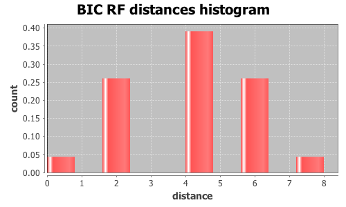

Application Meta
jModeltest 2.1
(c) 2011-onwards D. Darriba, G.L. Taboada, R. Doallo and D. Posada,(1) Department of Biochemistry, Genetics and Immunology
University of Vigo, 36310 Vigo, Spain.
(2) Department of Electronics and Systems
University of A Coruna, 15071 A Coruna, Spain.
e-mail: ddarriba@udc.es, dposada@uvigo.es
Wed Aug 26 13:06:29 EDT 2015
Mac OS X 10.10.5, arch: x86_64, bits: 64, numcores: 4
| Citation: | Darriba D, Taboada GL, Doallo R and Posada D. 2012. "jModelTest 2: more models, new heuristics and parallel computing". Nature Methods 9, 772. |
 Back to top
Back to top Settings
Arguments = -d group3/group3.txt.gene_34.phy -s 3 -i -g 4 -f -BIC -tr 7 -o group3out/g3outgene_34.txtInput Alignment: "group3/group3.txt.gene_34.phy"
NumTaxa = 17
Length = 741
Phyml version = 3.0
Phyml binary = PhyML_3.0_macOS_i386
Candidate models = 24
number of substitution schemes = 3
including models with equal/unequal base frequencies (+F)
including models with/without a proportion of invariable sites (+I)
including models with/without rate variation among sites (+G) (nCat = 4)
Optimized free parameters (K) = Substitution parameters + 31 branch lengths + topology
Base tree for likelihood calculations = Maximum Likelihood
Tree topology search operation = NNI
Model Optimization Results
| ID | Name | Partition | -lnL | p | fA | fC | fG | fT | ti/tv | R(a) | R(b) | R(c) | R(d) | R(e) | R(f) | p-inv | shape |
|---|---|---|---|---|---|---|---|---|---|---|---|---|---|---|---|---|---|
| 1 | JC | 000000 | 1474.5806 | 32 | - | - | - | - | - | - | - | - | - | - | - | - | - |
| 2 | JC+I | 000000 | 1463.9904 | 33 | - | - | - | - | - | - | - | - | - | - | - | 0.8070 | - |
| 3 | JC+G | 000000 | 1464.4650 | 33 | - | - | - | - | - | - | - | - | - | - | - | - | 0.0290 |
| 4 | JC+I+G | 000000 | 1463.7192 | 34 | - | - | - | - | - | - | - | - | - | - | - | 0.6920 | 1.0640 |
| 5 | F81 | 000000 | 1465.9304 | 35 | 0.3060 | 0.2064 | 0.2305 | 0.2571 | - | - | - | - | - | - | - | - | - |
| 6 | F81+I | 000000 | 1455.6596 | 36 | 0.3049 | 0.2068 | 0.2315 | 0.2568 | - | - | - | - | - | - | - | 0.8020 | - |
| 7 | F81+G | 000000 | 1456.4189 | 36 | 0.3039 | 0.2079 | 0.2313 | 0.2569 | - | - | - | - | - | - | - | - | 0.0300 |
| 8 | F81+I+G | 000000 | 1455.6584 | 37 | 0.3048 | 0.2068 | 0.2316 | 0.2568 | - | - | - | - | - | - | - | 0.2190 | 0.0240 |
| 9 | K80 | 010010 | 1451.3004 | 33 | - | - | - | - | 3.0345 | - | - | - | - | - | - | - | - |
| 10 | K80+I | 010010 | 1440.2732 | 34 | - | - | - | - | 3.2182 | - | - | - | - | - | - | 0.8140 | - |
| 11 | K80+G | 010010 | 1440.8830 | 34 | - | - | - | - | 3.1595 | - | - | - | - | - | - | - | 0.0290 |
| 12 | K80+I+G | 010010 | 1439.9327 | 35 | - | - | - | - | 3.2405 | - | - | - | - | - | - | 0.6980 | 0.9780 |
| 13 | HKY | 010010 | 1442.5222 | 36 | 0.3058 | 0.2068 | 0.2283 | 0.2591 | 3.0267 | - | - | - | - | - | - | - | - |
| 14 | HKY+I | 010010 | 1432.1714 | 37 | 0.3038 | 0.2073 | 0.2305 | 0.2584 | 3.1677 | - | - | - | - | - | - | 0.8030 | - |
| 15 | HKY+G | 010010 | 1432.5099 | 37 | 0.3039 | 0.2071 | 0.2296 | 0.2595 | 3.1744 | - | - | - | - | - | - | - | 0.0240 |
| 16 | HKY+I+G | 010010 | 1432.1687 | 38 | 0.3038 | 0.2073 | 0.2306 | 0.2584 | 3.1728 | - | - | - | - | - | - | 0.2700 | 0.1070 |
| 17 | SYM | 012345 | 1446.4352 | 37 | - | - | - | - | - | 0.4170 | 2.5129 | 0.0821 | 0.2389 | 2.6793 | 1.0000 | - | - |
| 18 | SYM+I | 012345 | 1435.6134 | 38 | - | - | - | - | - | 0.4325 | 2.5861 | 0.0180 | 0.1974 | 2.7418 | 1.0000 | 0.8100 | - |
| 19 | SYM+G | 012345 | 1436.1510 | 38 | - | - | - | - | - | 0.4260 | 2.5596 | 0.0380 | 0.2088 | 2.7190 | 1.0000 | - | 0.0240 |
| 20 | SYM+I+G | 012345 | 1435.6121 | 39 | - | - | - | - | - | 0.4335 | 2.5934 | 0.0156 | 0.1964 | 2.7418 | 1.0000 | 0.2530 | 0.0220 |
| 21 | GTR | 012345 | 1437.0410 | 40 | 0.3099 | 0.2061 | 0.2273 | 0.2567 | - | 0.4059 | 2.3055 | 0.0704 | 0.2670 | 2.8279 | 1.0000 | - | - |
| 22 | GTR+I | 012345 | 1426.9201 | 41 | 0.3084 | 0.2069 | 0.2292 | 0.2556 | - | 0.4115 | 2.3222 | 0.0187 | 0.2314 | 2.8841 | 1.0000 | 0.7980 | - |
| 23 | GTR+G | 012345 | 1428.0645 | 41 | 0.3088 | 0.2059 | 0.2287 | 0.2567 | - | 0.4351 | 2.4347 | 0.0341 | 0.3336 | 3.2020 | 1.0000 | - | 0.0240 |
| 24 | GTR+I+G | 012345 | 1426.9196 | 42 | 0.3083 | 0.2069 | 0.2292 | 0.2556 | - | 0.4122 | 2.3243 | 0.0186 | 0.2316 | 2.8896 | 1.0000 | 0.1960 | 0.0220 |
There are 7 different topologies. The following table shows the models supporting each topology and the rank according to each Information Criterion, as well as Robinson-Foulds and Euclidean distances with the tree of the best-fit model.
| ID | Models | Topology | AIC | BIC | AICc | DT | |
|---|---|---|---|---|---|---|---|
| 0 |
K80+I K80+G
|
RANK | - | 0 | - | - | |
| Weight | - | 0.8200 | - | - | |||
| RF | - | 0 | - | - | |||
| AVG Distance | - | 4.4067e-04 | - | - | |||
| Distance VAR | - | 1.9419e-07 | - | - | |||
| 1 |
JC JC+I JC+G JC+I+G K80 K80+I+G
|
RANK | - | 1 | - | - | |
| Weight | - | 0.0277 | - | - | |||
| RF | - | 2 | - | - | |||
| AVG Distance | - | 4.9940e-03 | - | - | |||
| Distance VAR | - | 4.8513e-07 | - | - | |||
| 2 |
F81+G
|
RANK | - | 2 | - | - | |
| Weight | - | 0.0000 | - | - | |||
| RF | - | 4 | - | - | |||
| AVG Distance | - | 4.7594e-03 | - | - | |||
| Distance VAR | - | 0.0000e+00 | - | - | |||
| 3 |
HKY+I HKY+I+G SYM+I SYM+G SYM+I+G GTR+I GTR+I+G
|
RANK | - | 3 | - | - | |
| Weight | - | 0.0903 | - | - | |||
| RF | - | 4 | - | - | |||
| AVG Distance | - | 7.5624e-03 | - | - | |||
| Distance VAR | - | 2.6173e-09 | - | - | |||
| 4 |
HKY+G
|
RANK | - | 4 | - | - | |
| Weight | - | 0.0620 | - | - | |||
| RF | - | 4 | - | - | |||
| AVG Distance | - | 3.3528e-03 | - | - | |||
| Distance VAR | - | 0.0000e+00 | - | - | |||
| 5 |
F81 F81+I F81+I+G HKY SYM GTR
|
RANK | - | 5 | - | - | |
| Weight | - | 0.0001 | - | - | |||
| RF | - | 6 | - | - | |||
| AVG Distance | - | 9.2873e-03 | - | - | |||
| Distance VAR | - | 1.1709e-07 | - | - | |||
| 6 |
GTR+G
|
RANK | - | 6 | - | - | |
| Weight | - | 0.0000 | - | - | |||
| RF | - | 8 | - | - | |||
| AVG Distance | - | 3.6071e-03 | - | - | |||
| Distance VAR | - | 0.0000e+00 | - | - |
BIC Selection Results
Model selected
| Model | K80+I | ||
|---|---|---|---|
| partition | 010010 | ||
| -lnL | 1440.2732 | ||
| K | 34 | ||
| freqA | - | R(a) | - |
| freqC | - | R(b) | - |
| freqG | - | R(c) | - |
| freqT | - | R(d) | - |
| ti/tv | 3.2182 | R(e) | - |
| R(f) | - | ||
| p-inv | 0.8140 | gamma | - |
Best model tree
((((((I0076:0.00000000,I0075:0.00693230):0.00135340,I0147:0.00135340):0.00000003,((I0141:0.00273415,I0067:0.00298625):0.00000011,I0068:0.00000004):0.00135340):0.00000005,((((I0152:0.00000000,I0149:0.00135340):0.00000003,I0148:0.00551977):0.00000004,(I0151:0.00000010,I0119:0.00414665):0.00271922):0.00000005,I0150:0.00409781):0.00135340):0.00133017,((I0111:0.03177063,I0144:0.00277483):0.00274035,I0158:0.01141988):0.00000003):0.00556478,I0135:0.00075582,I0127:0.00061660);
Display best model tree in PhyloWidget
| Model | -lnL | K | BIC | delta | weight | cumWeight |
|---|---|---|---|---|---|---|
| K80+I | 1440.2732 | 34 | 3105.2185 | 0.0000 | 0.5312 | 0.5312 |
| K80+G | 1440.8830 | 34 | 3106.4381 | 1.2196 | 0.2887 | 0.8200 |
| HKY+I | 1432.1714 | 37 | 3108.8388 | 3.6203 | 0.0869 | 0.9069 |
| HKY+G | 1432.5099 | 37 | 3109.5158 | 4.2973 | 0.0620 | 0.9688 |
| K80+I+G | 1439.9327 | 35 | 3111.1454 | 5.9269 | 0.0274 | 0.9963 |
| HKY+I+G | 1432.1687 | 38 | 3115.4414 | 10.2229 | 0.0032 | 0.9995 |
| K80 | 1451.3004 | 33 | 3120.6648 | 15.4463 | 0.0002 | 0.9997 |
| SYM+I | 1435.6134 | 38 | 3122.3308 | 17.1123 | 0.0001 | 0.9998 |
| HKY | 1442.5222 | 36 | 3122.9325 | 17.7140 | 0.0001 | 0.9999 |
| SYM+G | 1436.1510 | 38 | 3123.4059 | 18.1874 | 0.0001 | 1.0000 |
| GTR+I | 1426.9201 | 41 | 3124.7683 | 19.5498 | 0.0000 | 1.0000 |
| GTR+G | 1428.0645 | 41 | 3127.0570 | 21.8385 | 0.0000 | 1.0000 |
| SYM+I+G | 1435.6121 | 39 | 3128.9363 | 23.7178 | 0.0000 | 1.0000 |
| GTR+I+G | 1426.9196 | 42 | 3131.3753 | 26.1568 | 0.0000 | 1.0000 |
| SYM | 1446.4352 | 37 | 3137.3664 | 32.1479 | 0.0000 | 1.0000 |
| GTR | 1437.0410 | 40 | 3138.4021 | 33.1836 | 0.0000 | 1.0000 |
| JC+I | 1463.9904 | 33 | 3146.0449 | 40.8264 | 0.0000 | 1.0000 |
| JC+G | 1464.4650 | 33 | 3146.9940 | 41.7755 | 0.0000 | 1.0000 |
| F81+I | 1455.6596 | 36 | 3149.2071 | 43.9886 | 0.0000 | 1.0000 |
| F81+G | 1456.4189 | 36 | 3150.7258 | 45.5073 | 0.0000 | 1.0000 |
| JC+I+G | 1463.7192 | 34 | 3152.1104 | 46.8919 | 0.0000 | 1.0000 |
| F81+I+G | 1455.6584 | 37 | 3155.8129 | 50.5944 | 0.0000 | 1.0000 |
| JC | 1474.5806 | 32 | 3160.6171 | 55.3986 | 0.0000 | 1.0000 |
| F81 | 1465.9304 | 35 | 3163.1408 | 57.9223 | 0.0000 | 1.0000 |
| -lnL: | negative log likelihod |
| K: | number of estimated parameters |
| BIC: | Bayesian Information Criterion |
| delta: | BIC difference |
| weight: | BIC weight |
| cumWeight: | cumulative BIC weight |
Confidence interval
There are 24 models in the 100.00% confidence interval:
K80+I K80+G HKY+I HKY+G K80+I+G HKY+I+G K80 SYM+I HKY SYM+G GTR+I GTR+G SYM+I+G GTR+I+G SYM GTR JC+I JC+G F81+I F81+G JC+I+G F81+I+G JC F81
Euclidean distances histogram from each model optimized tree to K80+I tree.

Robinson-Foulds distances histogram from the different topologies to K80+I topology.
Robinson-Foulds distances histogram from the different topologies to K80+I topology.